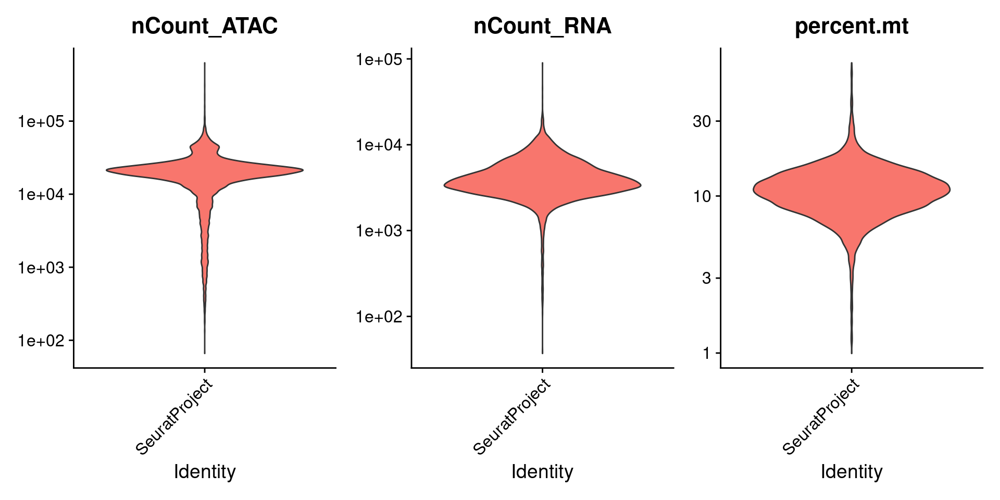
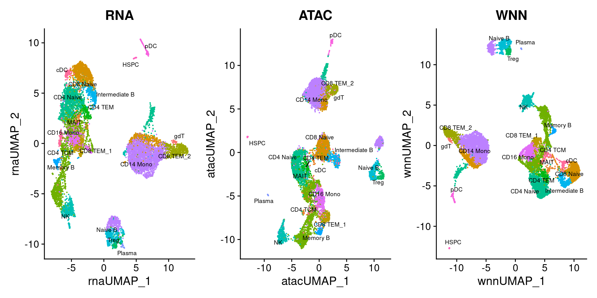
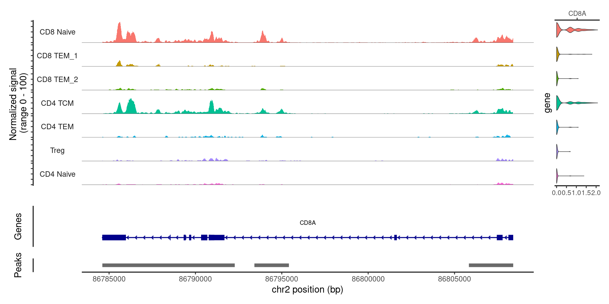
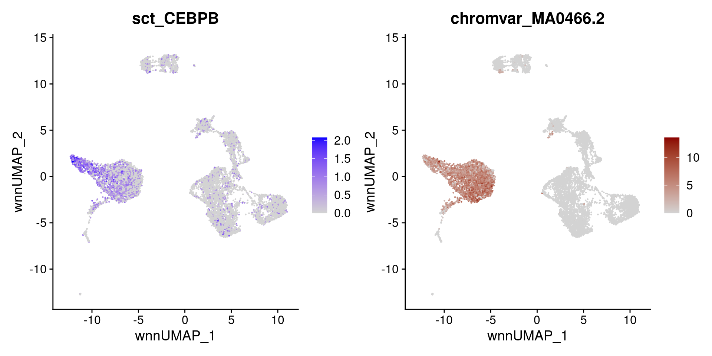
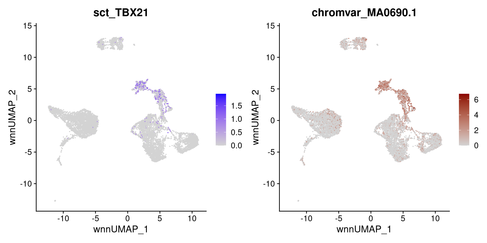
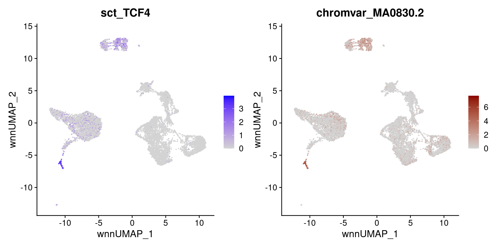
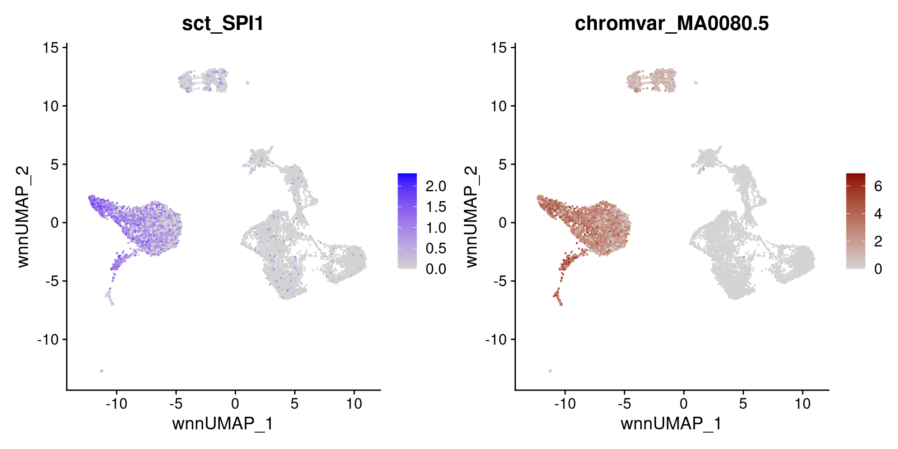
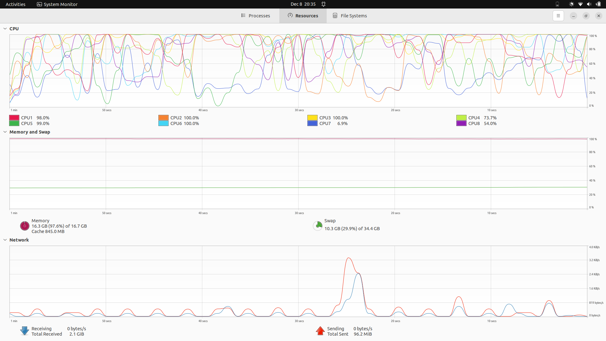

# download.file("https://cf.10xgenomics.com/samples/cell-arc/1.0.0/pbmc_granulocyte_sorted_10k/pbmc_granulocyte_sorted_10k_filtered_feature_bc_matrix.h5", "./data/pbmc_granulocyte_sorted_10k_filtered_feature_bc_matrix.h5", method = "wget", quiet=TRUE)
#
# download.file("https://cf.10xgenomics.com/samples/cell-arc/1.0.0/pbmc_granulocyte_sorted_10k/pbmc_granulocyte_sorted_10k_atac_fragments.tsv.gz", "./data/pbmc_granulocyte_sorted_10k_atac_fragments.tsv.gz", method = "wget", quiet=TRUE)
#
# download.file("https://cf.10xgenomics.com/samples/cell-arc/1.0.0/pbmc_granulocyte_sorted_10k/pbmc_granulocyte_sorted_10k_atac_fragments.tsv.gz.tbi", "./data/https://cf.10xgenomics.com/samples/cell-arc/1.0.0/pbmc_granulocyte_sorted_10k/pbmc_granulocyte_sorted_10k_atac_fragments.tsv.gz.tbi", method = "wget", quiet=TRUE)Integrated Weighted Nearest Neighbor Analysis of 10x Multiome Paired scRNA-seq and scATAC-seq profiles
Multimodal single-cell technologies, which simultaneously profile multiple data types in the same cell, represent an important advancement in the discovery and characterization of cell states. Transcriptomic and epigenetic cellular states are key determinants of cellular identity in tissues. scRNA_seq technologies are capable of discovering new cell types and states in heterogeneous tissues, however transcriptomics alone is often incapable of separating molecularly similar, but functionaly distinct categories of immune cells (e.g. distinct populations of T cells including effector, regulatory). Defining cell states based on transcriptome alone is insuficient as important sources of cellular heterogeneity may not correlate strongly with transcriptomic features despite being identifiable in other modalities. Mapping of accessible chromatin in single cells is a powerful approach for dissecting tissue heterogeneity and delineating candidate regulatory genomic sequences in each constituent cell type.
Multimodal analysis - simultaneous profiling of transcriptome alongside chromatin accessibility - can overcome the limitations of scRNA-seq and allows exploration of how multiple cellular modalities affect cellular state and function.
Weighted nearest neighbor (WNN) analysis is an unsupervised framework that enables integrative analysis of multiple modalities by learning the relative utility if each data type, here RNA and ATAC (assay for transposase-accessible chromatin), in each cell.
Workflow
Create a multimodal Seurat object with paired transcriptome and ATAC-seq profiles
Perform multimodal WNN analyis by computing a WNN graph which represents a weighted combination of RNA and ATAC-seq modalities. Use the WNN graph for weighted neighbor clustering and visualization of RNA + ATAC data in single cells
Leverage both modalities to identify putative regulators of different cell types and states
Download Single Cell Multiome ATAC + Gene Expression Dataset
Paired scRNA-seq and scATAC-seq profiles from 10X Genomics - PBMC from a healthy donor, granulocytes removed through cell sorting (10k)
Single Cell Multiome ATAC + Gene Exp. Dataset by Cell Ranger ARC 1.0.0
For a summary of the dataset click here.
Files:
Filtered feature barcode matrix (HDF5) that contains both data GE and ATAC types - 154.76 MB
ATAC Per fragment information file (TSV.GZ) that contains a full list of all unique fragments across all single cells (and not only fragments that map to peaks - 1.91 GB
ATAC Per fragment information index (TSV.GZ index) - 1003 KB
Load Libraries
library(Seurat) # QC, analysis, and exploration of scRNA-seq dataLoading required package: SeuratObjectLoading required package: sp
Attaching package: 'SeuratObject'The following object is masked from 'package:base':
intersectlibrary(Signac) # analysis of single-cell chromatin datasets, including scATAC-seq, and multimodal datasets
library(EnsDb.Hsapiens.v86)Loading required package: ensembldbLoading required package: BiocGenerics
Attaching package: 'BiocGenerics'The following object is masked from 'package:SeuratObject':
intersectThe following objects are masked from 'package:stats':
IQR, mad, sd, var, xtabsThe following objects are masked from 'package:base':
anyDuplicated, aperm, append, as.data.frame, basename, cbind,
colnames, dirname, do.call, duplicated, eval, evalq, Filter, Find,
get, grep, grepl, intersect, is.unsorted, lapply, Map, mapply,
match, mget, order, paste, pmax, pmax.int, pmin, pmin.int,
Position, rank, rbind, Reduce, rownames, sapply, setdiff, sort,
table, tapply, union, unique, unsplit, which.max, which.minLoading required package: GenomicRangesLoading required package: stats4Loading required package: S4Vectors
Attaching package: 'S4Vectors'The following object is masked from 'package:utils':
findMatchesThe following objects are masked from 'package:base':
expand.grid, I, unnameLoading required package: IRanges
Attaching package: 'IRanges'The following object is masked from 'package:sp':
%over%Loading required package: GenomeInfoDbLoading required package: GenomicFeaturesLoading required package: AnnotationDbiLoading required package: BiobaseWelcome to Bioconductor
Vignettes contain introductory material; view with
'browseVignettes()'. To cite Bioconductor, see
'citation("Biobase")', and for packages 'citation("pkgname")'.Loading required package: AnnotationFilter
Attaching package: 'ensembldb'The following object is masked from 'package:stats':
filterlibrary(dplyr)
Attaching package: 'dplyr'The following objects are masked from 'package:ensembldb':
filter, selectThe following object is masked from 'package:AnnotationDbi':
selectThe following object is masked from 'package:Biobase':
combineThe following objects are masked from 'package:GenomicRanges':
intersect, setdiff, unionThe following object is masked from 'package:GenomeInfoDb':
intersectThe following objects are masked from 'package:IRanges':
collapse, desc, intersect, setdiff, slice, unionThe following objects are masked from 'package:S4Vectors':
first, intersect, rename, setdiff, setequal, unionThe following objects are masked from 'package:BiocGenerics':
combine, intersect, setdiff, unionThe following objects are masked from 'package:stats':
filter, lagThe following objects are masked from 'package:base':
intersect, setdiff, setequal, unionlibrary(ggplot2)Load Data
Create a Seurat object based on the gene expression data, and then add in the ATAC-seq data as a a second assay.
# read count matrix from 10x CellRanger hdf5 file that contains both SCRNA-seq and scATAC-seq matrices.
inputdata.10x <- Read10X_h5("./data/pbmc_granulocyte_sorted_10k_filtered_feature_bc_matrix.h5")Genome matrix has multiple modalities, returning a list of matrices for this genome# extract RNA and ATAC matrices
rna_counts <- inputdata.10x$`Gene Expression`
atac_counts <- inputdata.10x$Peaks
# create Seurat object
pbmc <- CreateSeuratObject(counts = rna_counts, assay = "RNA")
pbmc[["percent.mt"]] <- PercentageFeatureSet(pbmc, pattern = "^MT-") # mitochondrial genes percent counts
# add in ATAC-seq data
# only peaks in standard choromosomes are used
grange.counts <- Signac::StringToGRanges(rownames(atac_counts), sep = c(":", "-"))
grange.used <- GenomeInfoDb::seqnames(grange.counts) %in% GenomeInfoDb::standardChromosomes(grange.counts)
atac_counts <- atac_counts[as.vector(grange.used),]
annotations <- suppressWarnings(Signac::GetGRangesFromEnsDb(ensdb = EnsDb.Hsapiens.v86)) # pulls transcript information for all chromosomes from an ENSDb object
GenomeInfoDb::seqlevelsStyle(annotations) <- "UCSC"
GenomeInfoDb::genome(annotations) <- "hg38"
frag.file <- "./data/pbmc_granulocyte_sorted_10k_atac_fragments.tsv.gz"
# create a Signac ChromatinAssay object
chrom_assay <- Signac::CreateChromatinAssay(
counts = atac_counts,
sep = c(":", "-"),
genome = "hg38",
fragments = frag.file,
min.cells = 10,
annotation = annotations
)Computing hashpbmc[["ATAC"]] <- chrom_assayQC & Filtering
based on the number of detected molecules for each modality as well as mitochondrial percentage
VlnPlot(pbmc, features = c("nCount_ATAC", "nCount_RNA", "percent.mt"), ncol = 3,
log = TRUE, pt.size = 0) + NoLegend()Warning: Default search for "data" layer in "RNA" assay yielded no results;
utilizing "counts" layer instead.
pbmc <- subset(
x = pbmc,
subset = nCount_ATAC < 7e4 &
nCount_ATAC > 5e3 &
nCount_RNA < 25000 &
nCount_RNA > 1000 &
percent.mt < 20
)Individual Analysis - Pre-processing & dimensionality reduction
on both assays independently
# RNA analysis
DefaultAssay(pbmc) <- "RNA"
pbmc <- SCTransform(pbmc, verbose = FALSE) %>%
RunPCA() %>%
RunUMAP(dims = 1:50, reduction.name = 'umap.rna', reduction.key = 'rnaUMAP_')PC_ 1
Positive: EEF1A1, RPL13, RPS27, RPL13A, GNLY, RPL41, RPS27A, RPS2, RPL3, RPS12
BCL2, RPS18, RPL11, LEF1, BCL11B, BACH2, RPL23A, RPL10, INPP4B, IL32
RPL34, CAMK4, IL7R, RPS3, RPS26, RPS14, RPL30, RPL19, LTB, SKAP1
Negative: VCAN, SAT1, PLXDC2, SLC8A1, NEAT1, DPYD, NAMPT, ZEB2, LRMDA, LYZ
FCN1, LYN, AOAH, ANXA1, JAK2, CD36, ARHGAP26, TYMP, RBM47, PID1
PLCB1, LRRK2, ACSL1, LYST, IRAK3, DMXL2, MCTP1, GAB2, AC020916.1, TCF7L2
PC_ 2
Positive: IGHM, IGKC, BANK1, AFF3, RALGPS2, MS4A1, CD74, PAX5, EBF1, FCRL1
OSBPL10, CD79A, LINC00926, TCF4, COL19A1, IGHD, BLK, NIBAN3, CD22, IGLC2
SOX5, LIX1-AS1, CD79B, HLA-DRA, PLEKHG1, GPM6A, ADAM28, COBLL1, STEAP1B, AP002075.1
Negative: GNLY, CCL5, NKG7, CD247, PRF1, IL32, PRKCH, BCL11B, LEF1, INPP4B
IL7R, GZMA, CAMK4, THEMIS, GZMH, RORA, VCAN, TXK, DPYD, TC2N
AOAH, TRBC1, NEAT1, PITPNC1, PLCB1, SYNE2, STAT4, PDE3B, KLRD1, TGFBR3
PC_ 3
Positive: LEF1, EEF1A1, CAMK4, BACH2, INPP4B, IL7R, PDE3B, MAML2, FHIT, TSHZ2
BCL2, SERINC5, ANK3, NELL2, CCR7, LTB, TCF7, PRKCA, BCL11B, RPL11
RPL13, FOXP1, AC139720.1, RPS27A, OXNAD1, RPS12, MLLT3, RPS2, RPL34, RPS27
Negative: GNLY, NKG7, CCL5, PRF1, GZMH, GZMA, GZMB, CCL4, SPON2, KLRD1
PTGDS, FGFBP2, CST7, KLRF1, TGFBR3, BNC2, CTSW, CLIC3, ADGRG1, PDGFD
TCF4, IL2RB, NCAM1, PYHIN1, PPP2R2B, TRDC, A2M, MCTP2, ACTB, HOPX
PC_ 4
Positive: TCF4, LINC01374, LINC01478, PTGDS, CUX2, AC023590.1, EPHB1, RHEX, LINC00996, PTPRS
ZFAT, PLD4, COL26A1, CLEC4C, PLXNA4, LILRA4, FAM160A1, COL24A1, SCN9A, ITM2C
CCDC50, NRP1, UGCG, JCHAIN, RGS7, RUNX2, SLC35F3, GZMB, AC007381.1, IRF8
Negative: IGHM, GNLY, BANK1, IGKC, MS4A1, NKG7, PAX5, FCRL1, EBF1, RALGPS2
CCL5, CD79A, OSBPL10, LINC00926, COL19A1, IGHD, PRF1, CD22, LIX1-AS1, CD79B
STEAP1B, PLEKHG1, LARGE1, ADAM28, AP002075.1, BLK, GZMH, AC120193.1, GZMA, FCER2
PC_ 5
Positive: CDKN1C, FCGR3A, TCF7L2, IFITM3, CST3, AIF1, MTSS1, LST1, MS4A7, ACTB
PSAP, WARS, HLA-DPA1, CD74, SERPINA1, FCER1G, IFI30, COTL1, HLA-DRA, HLA-DRB1
FMNL2, CFD, FTL, SMIM25, CSF1R, HLA-DPB1, TMSB4X, TYROBP, MAFB, S100A4
Negative: VCAN, PLCB1, DPYD, ANXA1, PLXDC2, CD36, ARHGAP26, ACSL1, ARHGAP24, AC020916.1
GNLY, LRMDA, DYSF, CSF3R, PDE4D, MEGF9, FNDC3B, S100A8, ADAMTSL4-AS1, TMTC2
NAMPT, CREB5, S100A9, LRRK2, RAB11FIP1, RBM47, JUN, IGHM, SLC2A3, NRG1 Warning: The default method for RunUMAP has changed from calling Python UMAP via reticulate to the R-native UWOT using the cosine metric
To use Python UMAP via reticulate, set umap.method to 'umap-learn' and metric to 'correlation'
This message will be shown once per session18:50:27 UMAP embedding parameters a = 0.9922 b = 1.112Found more than one class "dist" in cache; using the first, from namespace 'spam'Also defined by 'BiocGenerics'18:50:27 Read 10412 rows and found 50 numeric columns18:50:27 Using Annoy for neighbor search, n_neighbors = 30Found more than one class "dist" in cache; using the first, from namespace 'spam'Also defined by 'BiocGenerics'18:50:27 Building Annoy index with metric = cosine, n_trees = 500% 10 20 30 40 50 60 70 80 90 100%[----|----|----|----|----|----|----|----|----|----|**************************************************|
18:50:29 Writing NN index file to temp file /tmp/RtmpdSHKE8/file3e54714490f01
18:50:29 Searching Annoy index using 1 thread, search_k = 3000
18:50:32 Annoy recall = 100%
18:50:33 Commencing smooth kNN distance calibration using 1 thread with target n_neighbors = 30
18:50:35 Initializing from normalized Laplacian + noise (using RSpectra)
18:50:36 Commencing optimization for 200 epochs, with 442362 positive edges
18:50:41 Optimization finished# ATAC analysis
# the first dimension excluded as this is typically correlated with sequencing depth
DefaultAssay(pbmc) <- "ATAC"
pbmc <- RunTFIDF(pbmc)Performing TF-IDF normalizationpbmc <- FindTopFeatures(pbmc, min.cutoff = 'q0')
pbmc <- RunSVD(pbmc)Running SVD
Scaling cell embeddingspbmc <- RunUMAP(pbmc, reduction = 'lsi', dims = 2:50,
reduction.name = "umap.atac", reduction.key = "atacUMAP_")18:53:36 UMAP embedding parameters a = 0.9922 b = 1.112
Found more than one class "dist" in cache; using the first, from namespace 'spam'
Also defined by 'BiocGenerics'
18:53:36 Read 10412 rows and found 49 numeric columns
18:53:36 Using Annoy for neighbor search, n_neighbors = 30
Found more than one class "dist" in cache; using the first, from namespace 'spam'
Also defined by 'BiocGenerics'
18:53:36 Building Annoy index with metric = cosine, n_trees = 50
0% 10 20 30 40 50 60 70 80 90 100%
[----|----|----|----|----|----|----|----|----|----|
**************************************************|
18:53:37 Writing NN index file to temp file /tmp/RtmpdSHKE8/file3e5474e1ec1f0
18:53:37 Searching Annoy index using 1 thread, search_k = 3000
18:53:41 Annoy recall = 100%
18:53:42 Commencing smooth kNN distance calibration using 1 thread with target n_neighbors = 30
18:53:43 Initializing from normalized Laplacian + noise (using RSpectra)
18:53:44 Commencing optimization for 200 epochs, with 415934 positive edges
18:53:49 Optimization finishedMultiModalAnalysis - Calculate WNN graph
A WNN graph represents a weighted combination of RNA and ATAC-seq modalities. The WNN graph is used then for UMAP visualization and clustering.
FindMultiModalNeighbors function constructs a weighted nearest neighbor (WNN) graph. For each cell, the nearest neighbors are identifyed based on a weighted combination of two modalities. Takes as input two dimensional reductions, one computed for each modality.
FindClusters function identifies clusters of cells by a shared nearest neighbor (SNN) modularity optimization based clustering algorithm. First calculate k-nearest neighbors and construct the SNN graph. Then optimize the modularity function to determine clusters. Algorithm for modularity optimization (1 = original Louvain algorithm; 2 = Louvain algorithm with multilevel refinement; 3 = SLM (smart local moving) algorithm; 4 = Leiden algorithm)
pbmc <- FindMultiModalNeighbors(pbmc, reduction.list = list("pca", "lsi"),
dims.list = list(1:50, 2:50))Calculating cell-specific modality weightsFinding 20 nearest neighbors for each modality.Calculating kernel bandwidthsFinding multimodal neighborsConstructing multimodal KNN graphConstructing multimodal SNN graphpbmc <- RunUMAP(pbmc, nn.name = "weighted.nn", reduction.name = "wnn.umap",
reduction.key = "wnnUMAP_")18:54:27 UMAP embedding parameters a = 0.9922 b = 1.112Found more than one class "dist" in cache; using the first, from namespace 'spam'Also defined by 'BiocGenerics'18:54:28 Commencing smooth kNN distance calibration using 1 thread with target n_neighbors = 20
18:54:29 Initializing from normalized Laplacian + noise (using RSpectra)
18:54:30 Commencing optimization for 200 epochs, with 307862 positive edges
18:54:35 Optimization finishedpbmc <- FindClusters(pbmc, graph.name = "wsnn", algorithm = 3, verbose = FALSE)levels(pbmc$seurat_clusters) [1] "0" "1" "2" "3" "4" "5" "6" "7" "8" "9" "10" "11" "12" "13" "14"
[16] "15" "16" "17" "18" "19" "20" "21"Cluster Annotation
# perform sub-clustering on cluster 6 to find additional structure
pbmc <- FindSubCluster(pbmc, cluster = 6, graph.name = "wsnn", algorithm = 3)
Idents(pbmc) <- "sub.cluster"unique(pbmc$sub.cluster) [1] "1" "5" "2" "15" "6_0" "7" "4" "8" "0" "6_1" "14" "3"
[13] "13" "11" "10" "6_2" "16" "21" "12" "17" "9" "18" "19" "20" # add annotations
pbmc <- RenameIdents(pbmc, '19' = 'pDC','20' = 'HSPC','15' = 'cDC')
pbmc <- RenameIdents(pbmc, '0' = 'CD14 Mono', '9' ='CD14 Mono', '5' = 'CD16 Mono')
pbmc <- RenameIdents(pbmc, '10' = 'Naive B', '11' = 'Intermediate B', '17' = 'Memory B', '21' = 'Plasma')
pbmc <- RenameIdents(pbmc, '7' = 'NK')
pbmc <- RenameIdents(pbmc, '4' = 'CD4 TCM', '13'= "CD4 TEM", '3' = "CD4 TCM", '16' ="Treg", '1' ="CD4 Naive", '14' = "CD4 Naive")
pbmc <- RenameIdents(pbmc, '2' = 'CD8 Naive', '8'= "CD8 Naive", '12' = 'CD8 TEM_1', '6_0' = 'CD8 TEM_2', '6_1' ='CD8 TEM_2', '6_4' ='CD8 TEM_2')Warning: Cannot find identity 6_4pbmc <- RenameIdents(pbmc, '18' = 'MAIT')
pbmc <- RenameIdents(pbmc, '6_2' ='gdT', '6_3' = 'gdT')Warning: Cannot find identity 6_3pbmc$celltype <- Idents(pbmc)Visualize Clustering
Clustering can be visualized based on gene expression, ATAC-seq, or WNN analysis. WNN analysis provides the clearest separation of cell states.
p1 <- DimPlot(pbmc, reduction = "umap.rna", group.by = "celltype",
label = TRUE, label.size = 2.5, repel = TRUE) + ggtitle("RNA")
p2 <- DimPlot(pbmc, reduction = "umap.atac", group.by = "celltype",
label = TRUE, label.size = 2.5, repel = TRUE) + ggtitle("ATAC")
p3 <- DimPlot(pbmc, reduction = "wnn.umap", group.by = "celltype",
label = TRUE, label.size = 2.5, repel = TRUE) + ggtitle("WNN")
p1 + p2 + p3 & NoLegend() & theme(plot.title = element_text(hjust = 0.5))
The ATAC-seq data assists in the separation of CD4 and CD8 T cell states - due to the presence of multiple loci that exhibit differential accessibility between different T cell subtypes. Below, visualization of ‘pseudobulk’ tracks of the CD8A locus alongside violin plots of gene expression levels.
## to make the visualization easier, subset T cell clusters
celltype.names <- levels(pbmc)
tcell.names <- grep("CD4|CD8|Treg", celltype.names, value = TRUE)
tcells <- subset(pbmc, idents = tcell.names)
CoveragePlot(tcells, region = 'CD8A', features = 'CD8A', assay = 'ATAC', expression.assay = 'SCT', peaks = TRUE)Warning: Removed 1 rows containing missing values (`geom_segment()`).
Examine Accessible Regions of each cell for enriched motifs determination
Use chromVAR package for inferring transcription-factor-associated accessibility from single-cell epigenomic data. chromVAR analyses sparse chromatin-accessibility data by estimating gain or loss of accessibility within peaks sharing the same motif or annotation while controlling for technical biases. chromVAR enables accurate clustering of scATAC-seq profiles and characterization of known and de novo sequence motifs associated with variation in chromatin accessibility. chromVAR takes as inputs aligned fragments (filtered for duplicates and low quality) from ATAC-seq experiments as well as genomic annotations/ motif positions, and computes a per-cell accessibility score for known motifs, and adds the scores as a third assay chromvar in the Seurat object.
Load additional libraries
library(chromVAR) # analysis of motif accessibility in scATAC-seqlibrary(JASPAR2020) # data package for JASPAR database of transcription factor (TF) binding profiles/motifs
library(TFBSTools) # tools for transcription factor binding site (TFBS) analysis
library(motifmatchr) # motif matching
library(BSgenome.Hsapiens.UCSC.hg38) # full genomic sequences for Hsapiens (UCSC hg38) used by chromVARLoading required package: BSgenomeLoading required package: BiostringsLoading required package: XVector
Attaching package: 'Biostrings'The following object is masked from 'package:base':
strsplitLoading required package: BiocIOLoading required package: rtracklayer
Attaching package: 'rtracklayer'The following object is masked from 'package:BiocIO':
FileForFormatgetMatrixSet function fetches matrix data for all matrices in the JASPAR database matching criteria defined by the named arguments and returns a PFMatrixList object. JASPAR is a regularly maintained open-access database storing manually curated TF binding preferences as position frequency matrices (PFMs). PFMs summarize nucleotide occurrences at each position in a set of observed TF-DNA interactions. PFMs can be transformed into probabilistic models to construct position weight matrices (PWMs) or position-specific scoring matrices (PSSMs), which then can be used to scan any DNA sequence and predict transcription factors binding sites (TFBSs).
CreateMotifMatrix function creates a motif x feature matrix from a set of genomic ranges, the genome and a set of position weight matrices.
RunChromVAR function is a wrapper to run chromVAR on an assay with a motif object present. Will return a new Seurat assay with the motif activities (the deviations in chromatin accessibility across the set of regions) as a new assay.
# Scan the DNA sequence of each peak for the presence of each motif, and create a Motif object
DefaultAssay(pbmc) <- "ATAC"
pwm_set <- TFBSTools::getMatrixSet(x = JASPAR2020, opts = list(species = 9606, all_versions = FALSE))
motif.matrix <- Signac::CreateMotifMatrix(features = granges(pbmc), pwm = pwm_set,
genome = 'hg38', use.counts = FALSE)
motif.object <- Signac::CreateMotifObject(data = motif.matrix, pwm = pwm_set)
pbmc <- SetAssayData(pbmc, assay = 'ATAC', slot = 'motifs', new.data = motif.object)Warning: The `slot` argument of `SetAssayData()` is deprecated as of SeuratObject 5.0.0.
ℹ Please use the `layer` argument instead.# this step can take 30-60 minutes
pbmc <- Signac::RunChromVAR(
object = pbmc,
genome = BSgenome.Hsapiens.UCSC.hg38
)Computing GC bias per regionSelecting background regionsComputing deviations from backgroundConstructing chromVAR assayExplore the Multimodal Dataset to Identify Key Regulators of Each Cell State
Paired data provides a unique opportunity to identify transcription factors (TFs) that satisfy multiple criteria, helping to narrow down the list of putative regulators to the most likely candidates.
The aim is to identify TFs whose expression is enriched in multiple cell types in the RNA measurements, but also have enriched accessibility for their motifs in the ATAC measurements.
As an example and positive control, the CCAAT Enhancer Binding Protein (CEBP) family of proteins, including the TF CEBPB, have been repeatedly shown to play important roles in the differentiation and function of myeloid cells including monocytes and dendritic cells. The plots below that both the expression of the CEBPB, and the accessibility of the MA0466.2.4 motif (which encodes the binding site for CEBPB), are both enriched in monocytes.
#returns MA0466.2
motif.name <- Signac::ConvertMotifID(pbmc, name = 'CEBPB')
gene_plot <- FeaturePlot(pbmc, features = "sct_CEBPB", reduction = 'wnn.umap')
motif_plot <- FeaturePlot(pbmc, features = motif.name, min.cutoff = 0,
cols = c("lightgrey", "darkred"), reduction = 'wnn.umap')Warning: No layers found matching search pattern providedWarning: Could not find MA0466.2 in the default search locations, found in
'chromvar' assay insteadgene_plot | motif_plot
Similarity search across all cell types
Use the presto package to perform fast differential expression. Run two tests:
one using gene expression data, and
the other using chromVAR motif accessibilities.
prestocalculates a p-value based on the Wilcox rank sum test, which is also the default test in Seurat, and we restrict our search to TFs that return significant results in both tests.
presto calculates a p-value based on the Wilcox rank sum test, which is also the default test in Seurat, and restrict the search to TFs that return significant results in both tests.
presto also calculates an “AUC” statistic, which reflects the power of each gene (or motif) to serve as a marker of cell type. A maximum AUC value of 1 indicates a perfect marker. Since the AUC statistic is on the same scale for both genes and motifs, the average of the AUC values from the two tests is taken and used to rank TFs for each cell type.
library("presto")Loading required package: RcppLoading required package: data.table
Attaching package: 'data.table'The following objects are masked from 'package:dplyr':
between, first, lastThe following object is masked from 'package:GenomicRanges':
shiftThe following object is masked from 'package:IRanges':
shiftThe following objects are masked from 'package:S4Vectors':
first, secondpresto:::wilcoxauc.Seurat computes auROC and Wilcoxon p-value based on Gaussian approximation.
markers_rna <- presto:::wilcoxauc.Seurat(X = pbmc, group_by = 'celltype',
assay = 'data', seurat_assay = 'SCT')
markers_motifs <- presto:::wilcoxauc.Seurat(X = pbmc, group_by = 'celltype',
assay = 'data', seurat_assay = 'chromvar')
motif.names <- markers_motifs$feature
colnames(markers_rna) <- paste0("RNA.", colnames(markers_rna))
colnames(markers_motifs) <- paste0("motif.", colnames(markers_motifs))
markers_rna$gene <- markers_rna$RNA.feature
markers_motifs$gene <- ConvertMotifID(pbmc, id = motif.names)head(markers_rna) RNA.feature RNA.group RNA.avgExpr RNA.logFC RNA.statistic RNA.auc
1 AL627309.1 CD14 Mono 0.010973772 0.0080623614 10660771 0.5056038
2 AL627309.5 CD14 Mono 0.076232200 0.0613814621 11444675 0.5427817
3 AL627309.4 CD14 Mono 0.006189974 0.0041084506 10602874 0.5028579
4 AL669831.2 CD14 Mono 0.001258894 0.0008063892 10554878 0.5005817
5 LINC01409 CD14 Mono 0.040223312 0.0028718469 10582572 0.5018951
6 FAM87B CD14 Mono 0.002517789 0.0019747825 10572650 0.5014245
RNA.pval RNA.padj RNA.pct_in RNA.pct_out gene
1 1.500696e-09 6.309440e-09 1.5256084 0.40475258 AL627309.1
2 1.895069e-79 3.279907e-78 10.6429350 2.08904557 AL627309.5
3 1.246041e-04 3.562474e-04 0.8717762 0.30030030 AL627309.4
4 9.103411e-02 1.528564e-01 0.1816201 0.06528267 AL669831.2
5 4.426693e-01 5.585537e-01 5.4849255 5.10510511 LINC01409
6 1.064617e-03 2.710954e-03 0.3632401 0.07833921 FAM87Bhead(markers_motifs) motif.feature motif.group motif.avgExpr motif.logFC motif.statistic motif.auc
1 MA0030.1 CD14 Mono -0.1928016 -0.2582115 8762222 0.4155621
2 MA0031.1 CD14 Mono -0.4889760 -0.6695225 6433869 0.3051363
3 MA0051.1 CD14 Mono 0.1772915 0.2720562 12210863 0.5791194
4 MA0057.1 CD14 Mono 0.6746273 0.9439923 16390072 0.7773249
5 MA0059.1 CD14 Mono 0.8208255 1.1467100 16125866 0.7647945
6 MA0066.1 CD14 Mono 1.4746132 2.0660066 17984341 0.8529356
motif.pval motif.padj motif.pct_in motif.pct_out gene
1 1.447808e-39 1.829267e-39 100 100 FOXF2
2 1.159386e-202 2.145881e-202 100 100 FOXD1
3 6.004374e-35 7.423377e-35 100 100 IRF2
4 0.000000e+00 0.000000e+00 100 100 MZF1(var.2)
5 0.000000e+00 0.000000e+00 100 100 MAX::MYC
6 0.000000e+00 0.000000e+00 100 100 PPARG# function to rank TFs for each cell type
topTFs <- function(celltype, padj.cutoff = 1e-2) {
ctmarkers_rna <- dplyr::filter(
markers_rna, RNA.group == celltype, RNA.padj < padj.cutoff, RNA.logFC > 0) %>%
arrange(-RNA.auc)
ctmarkers_motif <- dplyr::filter(
markers_motifs, motif.group == celltype, motif.padj < padj.cutoff, motif.logFC > 0) %>%
arrange(-motif.auc)
top_tfs <- inner_join(
x = ctmarkers_rna[, c(2, 11, 6, 7)],
y = ctmarkers_motif[, c(2, 1, 11, 6, 7)], by = "gene"
)
top_tfs$avg_auc <- (top_tfs$RNA.auc + top_tfs$motif.auc) / 2
top_tfs <- arrange(top_tfs, -avg_auc)
return(top_tfs)
}Compute, and visualize, putative regulators for any cell type
Recover well-established regulators, including TBX21 for NK cells, IRF4 for plasma cells, SOX4 for hematopoietic progenitors, EBF1 and PAX5 for B cells, IRF8 and TCF4 for pDC.
# identify top markers in NK and visualize
head(topTFs("NK"), 3) RNA.group gene RNA.auc RNA.pval motif.group motif.feature motif.auc
1 NK TBX21 0.7255167 0.000000e+00 NK MA0690.1 0.9160049
2 NK EOMES 0.5896136 7.202551e-101 NK MA0800.1 0.9233599
3 NK RUNX3 0.7705848 3.938954e-120 NK MA0684.2 0.6817032
motif.pval avg_auc
1 4.412602e-205 0.8207608
2 2.532814e-212 0.7564868
3 1.229743e-40 0.7261440motif.name <- ConvertMotifID(pbmc, name = 'TBX21')
gene_plot <- FeaturePlot(pbmc, features = "sct_TBX21", reduction = 'wnn.umap')
motif_plot <- FeaturePlot(pbmc, features = motif.name, min.cutoff = 0,
cols = c("lightgrey", "darkred"), reduction = 'wnn.umap')Warning: No layers found matching search pattern providedWarning: Could not find MA0690.1 in the default search locations, found in
'chromvar' assay insteadgene_plot | motif_plot
# identify top markers in pDC and visualize
head(topTFs("pDC"), 3) RNA.group gene RNA.auc RNA.pval motif.group motif.feature motif.auc
1 pDC TCF4 0.9998773 1.881543e-162 pDC MA0830.2 0.9965481
2 pDC IRF8 0.9907541 1.197641e-123 pDC MA0652.1 0.8833112
3 pDC SPIB 0.9113825 0.000000e+00 pDC MA0081.2 0.9068540
motif.pval avg_auc
1 1.785897e-69 0.9982127
2 3.982413e-42 0.9370327
3 3.083509e-47 0.9091182motif.name <- ConvertMotifID(pbmc, name = 'TCF4')
gene_plot <- FeaturePlot(pbmc, features = "sct_TCF4", reduction = 'wnn.umap')
motif_plot <- FeaturePlot(pbmc, features = motif.name, min.cutoff = 0,
cols = c("lightgrey", "darkred"), reduction = 'wnn.umap')Warning: No layers found matching search pattern providedWarning: Could not find MA0830.2 in the default search locations, found in
'chromvar' assay insteadgene_plot | motif_plot
# identify top markers in HSPC and visualize
head(topTFs("CD16 Mono"),3) RNA.group gene RNA.auc RNA.pval motif.group motif.feature motif.auc
1 CD16 Mono TCF7 0.6221807 1.483817e-26 CD16 Mono MA0769.2 0.6937599
2 CD16 Mono LEF1 0.6230641 9.550998e-27 CD16 Mono MA0768.1 0.6415456
3 CD16 Mono GATA3 0.6855747 3.403297e-132 CD16 Mono MA0037.3 0.5653994
motif.pval avg_auc
1 1.570860e-52 0.6579703
2 7.774662e-29 0.6323048
3 2.628062e-07 0.6254871motif.name <- ConvertMotifID(pbmc, name = 'SPI1')
gene_plot <- FeaturePlot(pbmc, features = "sct_SPI1", reduction = 'wnn.umap')
motif_plot <- FeaturePlot(pbmc, features = motif.name, min.cutoff = 0,
cols = c("lightgrey", "darkred"), reduction = 'wnn.umap')Warning: No layers found matching search pattern providedWarning: Could not find MA0080.5 in the default search locations, found in
'chromvar' assay insteadgene_plot | motif_plot
# identify top markers in other cell types
head(topTFs("Naive B"), 3) RNA.group gene RNA.auc RNA.pval motif.group motif.feature motif.auc
1 Naive B TCF4 0.8356916 1.914018e-238 Naive B MA0830.2 0.9060359
2 Naive B POU2F2 0.6979452 6.065960e-43 Naive B MA0507.1 0.9738541
3 Naive B EBF1 0.9123582 0.000000e+00 Naive B MA0154.4 0.7554676
motif.pval avg_auc
1 1.554535e-149 0.8708638
2 6.485324e-203 0.8358997
3 2.387243e-60 0.8339129head(topTFs("HSPC"), 3) RNA.group gene RNA.auc RNA.pval motif.group motif.feature motif.auc
1 HSPC SOX4 0.9864425 2.831723e-71 HSPC MA0867.2 0.6830497
2 HSPC GATA2 0.7115385 0.000000e+00 HSPC MA0036.3 0.8275008
3 HSPC MEIS1 0.8254177 0.000000e+00 HSPC MA0498.2 0.6924225
motif.pval avg_auc
1 1.241915e-03 0.8347461
2 7.591798e-09 0.7695196
3 6.877492e-04 0.7589201head(topTFs("Plasma"), 3) RNA.group gene RNA.auc RNA.pval motif.group motif.feature motif.auc
1 Plasma IRF4 0.8189420 5.329976e-35 Plasma MA1419.1 0.9776046
2 Plasma MEF2C 0.9108487 3.135227e-12 Plasma MA0497.1 0.7596637
3 Plasma TCF4 0.8306796 1.041100e-13 Plasma MA0830.2 0.7840848
motif.pval avg_auc
1 2.334627e-12 0.8982733
2 1.374353e-04 0.8352562
3 3.028306e-05 0.8073822Session Info
sessionInfo()R version 4.3.2 (2023-10-31)
Platform: x86_64-pc-linux-gnu (64-bit)
Running under: Ubuntu 22.04.3 LTS
Matrix products: default
BLAS: /usr/lib/x86_64-linux-gnu/openblas-pthread/libblas.so.3
LAPACK: /usr/lib/x86_64-linux-gnu/openblas-pthread/libopenblasp-r0.3.20.so; LAPACK version 3.10.0
locale:
[1] LC_CTYPE=en_CA.UTF-8 LC_NUMERIC=C
[3] LC_TIME=en_CA.UTF-8 LC_COLLATE=en_CA.UTF-8
[5] LC_MONETARY=en_CA.UTF-8 LC_MESSAGES=en_CA.UTF-8
[7] LC_PAPER=en_CA.UTF-8 LC_NAME=C
[9] LC_ADDRESS=C LC_TELEPHONE=C
[11] LC_MEASUREMENT=en_CA.UTF-8 LC_IDENTIFICATION=C
time zone: America/Vancouver
tzcode source: system (glibc)
attached base packages:
[1] stats4 stats graphics grDevices utils datasets methods
[8] base
other attached packages:
[1] presto_1.0.0 data.table_1.14.10
[3] Rcpp_1.0.11 BSgenome.Hsapiens.UCSC.hg38_1.4.5
[5] BSgenome_1.70.1 rtracklayer_1.62.0
[7] BiocIO_1.12.0 Biostrings_2.70.1
[9] XVector_0.42.0 motifmatchr_1.24.0
[11] TFBSTools_1.40.0 JASPAR2020_0.99.10
[13] chromVAR_1.24.0 ggplot2_3.4.4
[15] dplyr_1.1.4 EnsDb.Hsapiens.v86_2.99.0
[17] ensembldb_2.26.0 AnnotationFilter_1.26.0
[19] GenomicFeatures_1.54.1 AnnotationDbi_1.64.1
[21] Biobase_2.62.0 GenomicRanges_1.54.1
[23] GenomeInfoDb_1.38.1 IRanges_2.36.0
[25] S4Vectors_0.40.2 BiocGenerics_0.48.1
[27] Signac_1.12.0 Seurat_5.0.1
[29] SeuratObject_5.0.1 sp_2.1-2
loaded via a namespace (and not attached):
[1] ProtGenerics_1.34.0 matrixStats_1.1.0
[3] spatstat.sparse_3.0-3 bitops_1.0-7
[5] DirichletMultinomial_1.44.0 httr_1.4.7
[7] RColorBrewer_1.1-3 tools_4.3.2
[9] sctransform_0.4.1 backports_1.4.1
[11] DT_0.30 utf8_1.2.4
[13] R6_2.5.1 lazyeval_0.2.2
[15] uwot_0.1.16 withr_2.5.2
[17] prettyunits_1.2.0 gridExtra_2.3
[19] progressr_0.14.0 cli_3.6.1
[21] spatstat.explore_3.2-5 fastDummies_1.7.3
[23] labeling_0.4.3 spatstat.data_3.0-3
[25] readr_2.1.4 ggridges_0.5.4
[27] pbapply_1.7-2 Rsamtools_2.18.0
[29] foreign_0.8-86 R.utils_2.12.3
[31] dichromat_2.0-0.1 parallelly_1.36.0
[33] rstudioapi_0.15.0 RSQLite_2.3.4
[35] generics_0.1.3 gtools_3.9.5
[37] ica_1.0-3 spatstat.random_3.2-2
[39] GO.db_3.18.0 Matrix_1.6-3
[41] ggbeeswarm_0.7.2 fansi_1.0.6
[43] abind_1.4-5 R.methodsS3_1.8.2
[45] lifecycle_1.0.4 yaml_2.3.7
[47] SummarizedExperiment_1.32.0 SparseArray_1.2.2
[49] BiocFileCache_2.10.1 Rtsne_0.17
[51] glmGamPoi_1.14.0 grid_4.3.2
[53] blob_1.2.4 promises_1.2.1
[55] crayon_1.5.2 miniUI_0.1.1.1
[57] lattice_0.22-5 cowplot_1.1.1
[59] annotate_1.80.0 KEGGREST_1.42.0
[61] pillar_1.9.0 knitr_1.45
[63] rjson_0.2.21 future.apply_1.11.0
[65] codetools_0.2-19 fastmatch_1.1-4
[67] leiden_0.4.3.1 glue_1.6.2
[69] vctrs_0.6.5 png_0.1-8
[71] spam_2.10-0 poweRlaw_0.70.6
[73] gtable_0.3.4 cachem_1.0.8
[75] xfun_0.41 S4Arrays_1.2.0
[77] mime_0.12 pracma_2.4.4
[79] survival_3.5-7 RcppRoll_0.3.0
[81] ellipsis_0.3.2 fitdistrplus_1.1-11
[83] ROCR_1.0-11 nlme_3.1-163
[85] bit64_4.0.5 progress_1.2.3
[87] filelock_1.0.2 RcppAnnoy_0.0.21
[89] irlba_2.3.5.1 vipor_0.4.5
[91] KernSmooth_2.23-22 rpart_4.1.21
[93] seqLogo_1.68.0 colorspace_2.1-0
[95] DBI_1.1.3 Hmisc_5.1-1
[97] nnet_7.3-19 ggrastr_1.0.2
[99] tidyselect_1.2.0 bit_4.0.5
[101] compiler_4.3.2 curl_5.2.0
[103] htmlTable_2.4.2 hdf5r_1.3.8
[105] xml2_1.3.6 DelayedArray_0.28.0
[107] plotly_4.10.3 caTools_1.18.2
[109] checkmate_2.3.1 scales_1.3.0
[111] lmtest_0.9-40 rappdirs_0.3.3
[113] nabor_0.5.0 stringr_1.5.1
[115] digest_0.6.33 goftest_1.2-3
[117] spatstat.utils_3.0-4 rmarkdown_2.25
[119] htmltools_0.5.7 pkgconfig_2.0.3
[121] base64enc_0.1-3 sparseMatrixStats_1.14.0
[123] MatrixGenerics_1.14.0 dbplyr_2.4.0
[125] fastmap_1.1.1 rlang_1.1.2
[127] htmlwidgets_1.6.4 shiny_1.8.0
[129] DelayedMatrixStats_1.24.0 farver_2.1.1
[131] zoo_1.8-12 jsonlite_1.8.8
[133] BiocParallel_1.36.0 R.oo_1.25.0
[135] VariantAnnotation_1.48.1 RCurl_1.98-1.13
[137] magrittr_2.0.3 Formula_1.2-5
[139] GenomeInfoDbData_1.2.11 dotCall64_1.1-1
[141] patchwork_1.1.3 munsell_0.5.0
[143] reticulate_1.34.0 stringi_1.8.2
[145] zlibbioc_1.48.0 MASS_7.3-60
[147] plyr_1.8.9 parallel_4.3.2
[149] listenv_0.9.0 ggrepel_0.9.4
[151] CNEr_1.38.0 deldir_2.0-2
[153] splines_4.3.2 tensor_1.5
[155] hms_1.1.3 igraph_1.5.1
[157] spatstat.geom_3.2-7 RcppHNSW_0.5.0
[159] reshape2_1.4.4 biomaRt_2.58.0
[161] TFMPvalue_0.0.9 XML_3.99-0.16
[163] evaluate_0.23 biovizBase_1.50.0
[165] tzdb_0.4.0 httpuv_1.6.13
[167] RANN_2.6.1 tidyr_1.3.0
[169] purrr_1.0.2 polyclip_1.10-6
[171] future_1.33.0 scattermore_1.2
[173] xtable_1.8-4 restfulr_0.0.15
[175] RSpectra_0.16-1 later_1.3.2
[177] viridisLite_0.4.2 tibble_3.2.1
[179] memoise_2.0.1 beeswarm_0.4.0
[181] GenomicAlignments_1.38.0 cluster_2.1.5
[183] globals_0.16.2 Resources
